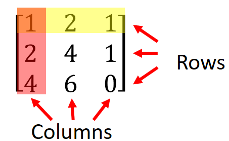
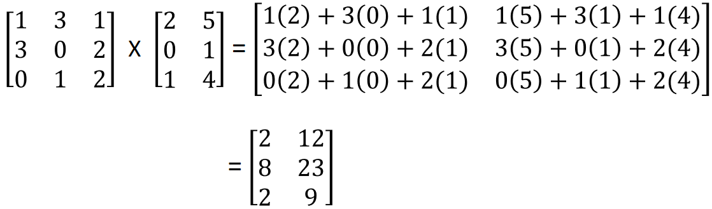

HOME BLOG EBOOKS ABOUT CONTACT SHOP
A Matrix is a rectangular array of numbers or functions enclosed in 2 square brackets. These numbers/functions are called elements of the matrix.

The first matrix has 2 rows and 2 columns, hence it is a 1×1 order matrix. The other matrices are 3×3, 1×2, 2×1 order respectively. Matrices with just a single row or column are called vectors. The 3rd matrix in our example is a row vector and the 4th one is a column vector.
Each element of a matrix is denoted as ajk, where j denotes the row no. and k denotes the the column no. For example, a23 corresponds to the element at 2nd row, 3rd column.
Two matrices of same size can be added by adding their corresponding elements
Example 1:
Similarly, two matrices of same size can be subtracted from one another by subtracting their corresponding elements.
Example 2:
Two matrices of different order can’t be neither added or subtracted.
Matrix multiplication is carried out by multiplying each element of a row of the first matrix by each element of a column of the second matrix and summing up the results. Matrix multiplication can be carried out only if the no. of columns of the first matrix must be equal to the no. of rows of the second matrix.
Example 3:

Remember that matrix multiplication is not commutative, i.e. AB ≠ BA.
Scalar (a number) multiplication of a matrix is carried out by multiplying each element of the matrix by the scalar.
Example 4:
The transpose of a matrix is the matrix obtained by interchanging its rows and columns. Transpose of a matrix A is denoted as AT.
Example 5:
A square matrix is a matrix in which the no. of rows are equal to the no. of columns. Identity matrix is a special type of square matrix in which all the main diagonal elements are one and all the non diagonal elements are zero. It is denoted as I.
A scalar value called the determinant can be computed for every square matrix. Determinant of a square matrix A is denoted as Det(A) or |A|.
For a 2 × 2 matrix, the determinant is defined as:
Similarly, for a 3 × 3 matrix, the determinant is:
This procedure can be extended to find the determinant for higher order square matrices. A matrix with zero determinant is called a singular matrix.
The inverse of a square matrix A is defined as the matrix A−1, which when multiplied with matrix A results in an identity matrix.
Inverse is defined only for square matrices, but not all square matrices have an inverse, only square matrices with non zero determinant (i.e non singular matrices) can have an inverse.
A good idea about these concepts are sufficient, software will take care of the computation. To learn about Matrices in detail, check out these lectures from OCW: MIT_OCW_Linear_Algebra